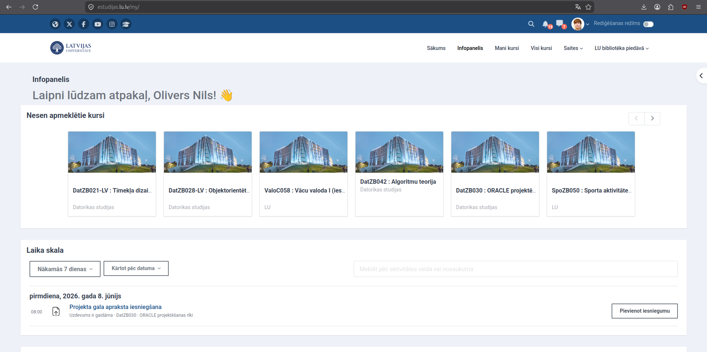
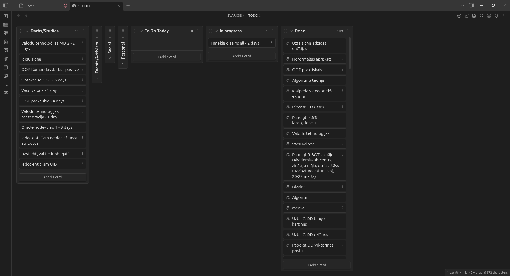
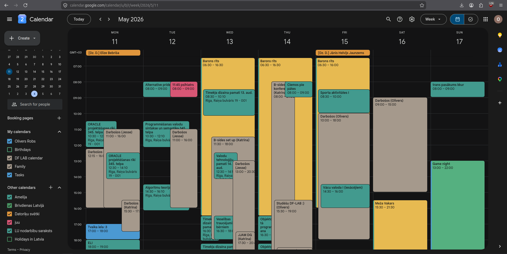
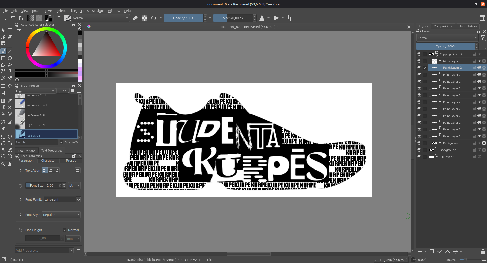
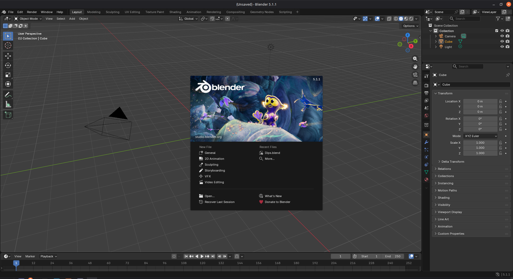
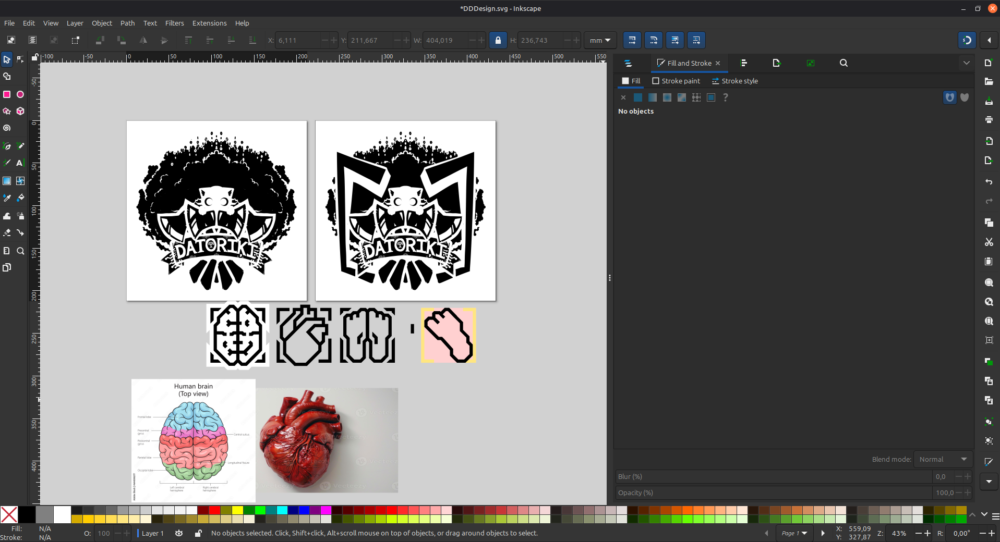

E-Studijas
Satur visus studiju materiālus, testus un informāciju par studijām.


Satur visus studiju materiālus, testus un informāciju par studijām.

Palīdz efektīvi plānot laiku gan studijās, gan darbā, gan ārpus studijām.
Mans mīļākais rīks pierakstu veikšanai un darāmo darbu organizēšanai.

Rastergrafikas ietotne, ko es izmantoju gan vaļaspriekiem, gan studijām, gan vizuāļu taisīšanai.

3D grafikas lietotne, ko es izmantoju "Mēs Dipu, Mēs Dapu" vizuāļiem.

Vectorgrafikas ietotne, ko es izmantoju darbam, lai sagatavotu failus lāzerēšanai.